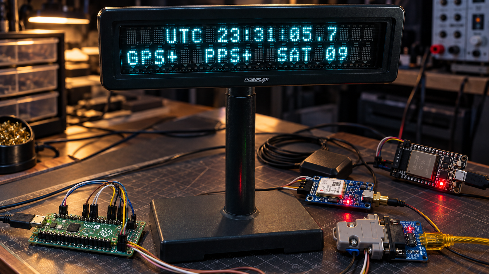

Absurdly Accurate Clock

Overview and architecture
Why “Absurdly Accurate”?
Even though it looks like I kept bolting crap onto a clock until NTP fell out, there was a little more engineering behind it than that.
The project started with an eight-digit seven-segment display that cost less than $2 from AliExpress. I thought it would make a fun clock. Soon afterward, a serial VFD customer display I'd recently found in the basement was sitting under my workbench, and it became a much more interesting display for the project.
What surprised me was how much could be done with very inexpensive hardware. A roughly $4 Raspberry Pi Pico 2, paired with GPS and a hardware PPS signal, could form the basis of a genuinely useful authoritative time source. As the project developed, I added PPS qualification, fault handling, an authoritative UTC timebase independent of the display, and defined interfaces for other devices to consume that time.
That eventually led to AAC Time Bridge: a roughly $6–7 ESP32 that takes qualified UTC from the clock and distributes it wirelessly to the local network using NTP, while providing its own WebUI for monitoring and management.
The “absurd” part isn't simply the accuracy. It's the mismatch between the cost and origins of the hardware and what the system became: inexpensive commodity microcontrollers, a GPS receiver, and repurposed point-of-sale hardware forming a deliberately structured timing system with defined authority, qualification, failure behavior, diagnostics, physical display, and network time distribution.
It started with a sub-$2 display and the idea of making a clock. I quickly realized it could become a reliable time appliance.
Absurdly Accurate Clock is an embedded timing system built around the Raspberry Pi Pico 2 and its RP2350 controller. The C++ firmware receives GPS serial data and a separate pulse-per-second (PPS) signal, qualifies their relationship, and maintains an authoritative UTC state. A Posiflex PD-2200 vacuum-fluorescent display presents that state; a separate interface exports it to an ESP32 network-time appliance.
The central decision is to separate time authority from its consumers. The Pico owns the accepted UTC second and its validity. The display derives a local-time presentation from a copy of that state, while the network interface publishes a read-only snapshot. Neither can set the clock. The Pico runs without an ESP32 or USB host, and the hardware-specific display layer can be adapted without replacing the timekeeping core.
“Authoritative” describes ownership within this system, not an independent realization of UTC. The clock still depends on the receiver’s UTC labels and pulse configuration. Its engineering focus is deciding when that information is usable, associating it with a boundary, and withdrawing validity when the association cannot be trusted.
System Architecture
This detailed engineering view follows the clock’s timing and presentation boundaries. GPS supplies UTC labels and PPS timing; the Pico 2/RP2350 qualifies those inputs and maintains authoritative time; the display subsystem drives the Posiflex VFD; and the ESP32 exports qualified time to the network.
UTC acquisition and qualification
The serial message names the second; PPS marks its boundary. Setting time when an NMEA sentence finishes would attach UTC to message delivery and serial transmission delay. Instead, a short interrupt timestamps each rising PPS edge and increments a capture sequence. The main loop takes a coherent copy and performs parsing, calendar conversion, and qualification outside the interrupt.
The receiver contract assumes a 1 Hz navigation solution with a UTC-aligned rising pulse and a GPRMC sentence for that same second arriving afterward. The firmware sends no receiver configuration commands. Association requires a checksum-valid, active RMC with valid date/time and no nonzero fractional seconds. Consecutive pulses must be 900–1100 ms apart; sentence consumption must begin at least 20 ms after the associated pulse and finish within 900 ms, without crossing another capture.
Two labels on consecutive captures must advance by exactly one UTC second. The following qualifying edge commits the second label plus one. After lock, qualifying PPS edges advance the epoch while fresh labels continue checking it. An RMC arrival never advances or rewrites the authoritative second. A conflicting label clears lock, and a correction requires reacquisition before it is committed at another edge.
The stored epoch is a signed 64-bit Unix-second value. It is not a continuously interpolated fractional UTC clock. The acquisition windows are rejection policies, not accuracy specifications; even consistent labels cannot expose a receiver stream that is always one whole second late. The documented approximately 140 ms RMC completion offset supports the association window, but does not independently verify absolute UTC alignment.
Display and local-time presentation
The reference build drives a separately powered Posiflex PD-2200 in Noritake mode over 9600-baud, 8N1 UART through a MAX3232 RS-232 interface. A debounced button selects UTC, Eastern, Central, Mountain, or Pacific time. Contemporary U.S. daylight-saving rules are applied only during rendering; the authoritative state and exported timestamps remain UTC. Selection resets to UTC at boot.
The upper row shows the selected zone and time; the lower row reports GPS validity, PPS presence, and a supplemental satellites-used count. The digit after the decimal point is a PPS-synchronized visual indicator, not tenths of UTC. It holds zero for the first half-second, then progresses toward nine before the next pulse. Display transmission and device response are separate from the timing boundary.
Output is bounded to one UART byte per service call and updates changed fields rather than queuing animation frames. This unit’s reported space-to-zero behavior led to a startup clear followed by positioned writes that leave blank cells unwritten. Reported incorrect hour glyphs led to contiguous two-character hour writes instead of directly addressing the ones cell. That accommodation is implemented, but its physical effectiveness and the underlying fault are not established. The output cache records UART acceptance, not display readback.
A read-only network-time boundary
The ESP32 companion’s architectural role is network-time/NTP service. It controls SPI transactions, while the Pico remains the time source. Native SPI1 operates as the peripheral in mode 1 at the documented, hardware-qualified 100 kHz rate. Incoming MOSI bytes are discarded: there is no command path for network observations to set or discipline Pico UTC.
Protocol v1 explicitly serializes a 40-byte packet containing the UTC epoch, quality flags, publication and boundary sequences, synchronization information, satellite status, and CRC-32. The publisher prepares a complete buffer; chip-select assertion copies it into an immutable transaction snapshot. A read therefore cannot combine fields from different publications, and repeated reads do not represent new seconds. CRC detects corruption, not authentication.
A separate TIME_SYNC output announces a newly processed, qualified boundary only when UTC is valid, PPS is present and locked, and processing is no more than 5 ms late. Late edges are suppressed. The packet reports the delay from the PPS capture timestamp to a timer read immediately before the GPIO transition, allowing the consumer to subtract that interval from its captured TIME_SYNC time. This is a software-delivered reference, not a zero-latency copy of GPS PPS or a calibrated precision output.
The consumer must wait for publication, validate the packet and quality flags, and match its captured edge to the synchronization and boundary sequences. Missing edges, reboot, invalid data, or ambiguous reads break that association. The repository records hardware validation of ESP32 packet acceptance and phase association; this establishes the source interface, not an end-to-end NTP accuracy result.
Validity, bounded work, and recovery
GPS validity, PPS presence, association lock, and UTC validity are separate state concepts. Missing PPS invalidates time after 1.5 seconds; three seconds without valid RMC or a usable association also clears lock. Skipped captures and invalid cadence are rejected. The last epoch remains stored after invalidation, but it is no longer authoritative: the display shows unavailable time, the packet clears UTC validity, and no new qualified TIME_SYNC edge is emitted.
The cooperative loop bounds GPS parsing, diagnostic drainage, and display output. If GPS servicing is delayed by more than 20 ms, parsers and association are reset and buffered input is drained, preventing known backlog from acquiring misleading fresh reception timestamps. USB diagnostics use a bounded queue that drops whole messages rather than waiting for an absent host. These limits reduce interference; they are not a measured worst-case execution-time guarantee.
A 4,000 ms RP2350 hardware watchdog is armed early in startup and fed only after all recurring loop services finish. Interrupts and timers do not feed it. Ordinary reference loss, invalid UTC, display backpressure, or an absent ESP32 do not intentionally trigger a reset. Recovery follows normal startup and reacquires time quality; no validity is preserved across reboot. USB reset markers and a faster heartbeat identify a watchdog boot. The README supplies a physical watchdog test procedure, rather than a recorded bench acceptance result.
Engineering evidence and remaining limits
Hardware records distinguish successful transport from inferred causes. The VFD bring-up verified the Pico UART output on an oscilloscope and displayed test characters through the MAX3232. It also established misleading TTL-header labels and a required DB9 transmit-to-receive crossover for the tested module/display combination; those findings are specific to that hardware.
SPI investigation separated a chip-select/reset feedback storm from a later first-byte alignment fault. The production lifecycle resets the peripheral only while deselected, keeps controller-owned signals input-only, and primes the transmit FIFO before enabling it. Final acceptance records correctly aligned, CRC-valid packets and successful ESP32 phase association. Startup short-transfer and chip-select fault counts remained in the cumulative totals, while the recorded steady-state intervals added full transactions without further transport-error increments. The exact analog reset transient and prior internal shifter state were not directly captured.
Host regression tests exercise timebase policy, presentation, serializer retries, independent packet vectors, corruption rejection, and transport ordering against a register model. They complement the bench records; they cannot establish electrical timing, optical display behavior, or absolute accuracy. The project has no characterized absolute timing-error budget or measured end-to-end NTP accuracy. OCXO holdover remains future work, and leap-second insertion/deletion is unsupported. The current RMC parser accepts years 2000–2099 and rejects second 60.